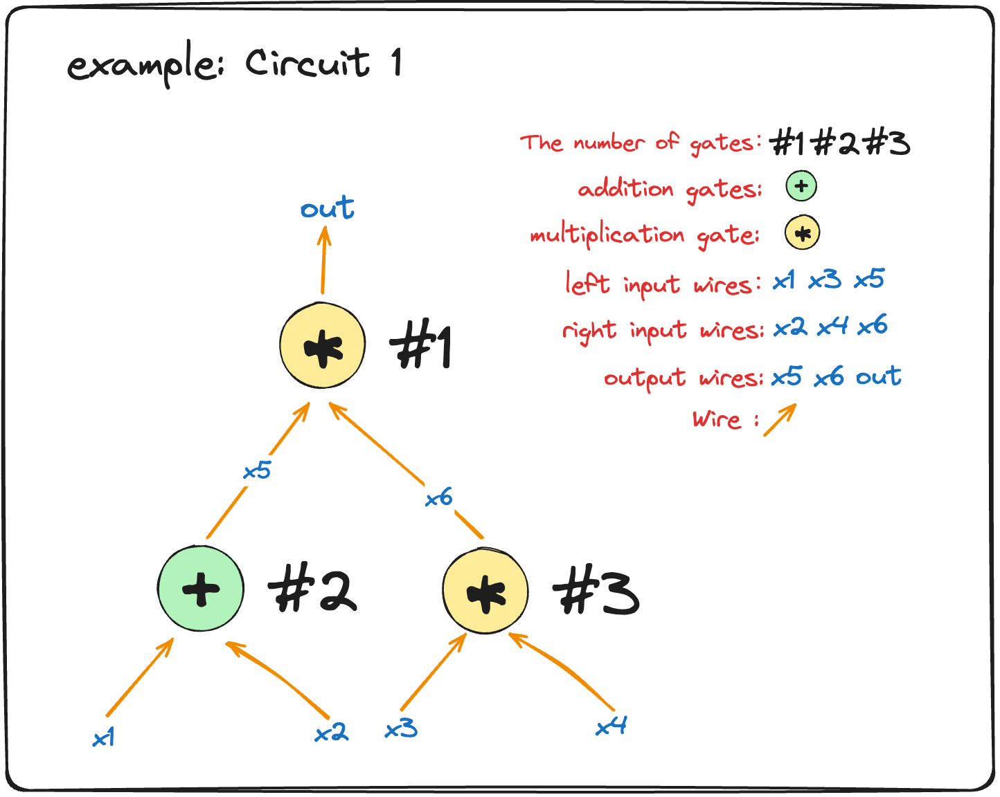
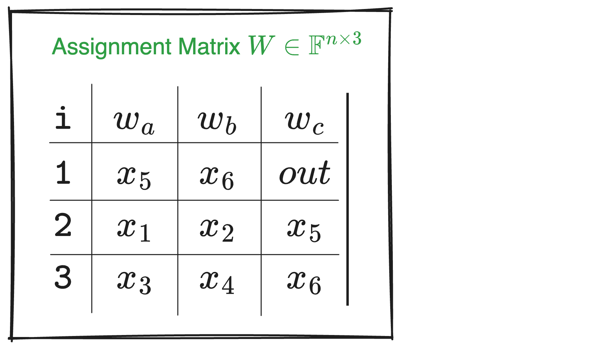

Introduction
Arithmetization refers to the process of converting computations into mathematical objects and then proving them using zero-knowledge proofs.
Plonkish Arithmetization is a unique arithmetization method specific to the Plonk proof system. Before the advent of Plonkish, the dominant circuit representation was R1CS, which was widely adopted by systems like Pinocchio, Groth16, and Bulletproofs. In 2019, the Plonk scheme introduced a seemingly retro style of circuit encoding. However, since Plonk pushed polynomial encoding to its limits, it is no longer confined to arithmetic circuits with just “addition gates” and “multiplication gates”; it can also support more flexible custom gates and lookup gates.
In this article, we’ll dive straight into the topic, first gaining an understanding of the Plonkish arithmetization scheme, exploring the components of a circuit and the underlying logic of its operations. Finally, we’ll compare the differences between Plonkish and R1CS arithmetization(as an appendix), allowing you to appreciate their distinctions and gain a deeper understanding of the significance of Plonkish encoding.
Plonkish Arithmetic Gates
Let’s begin by understanding the basic structure of a circuit and examine the components of an empty circuit in a static state. Below is an example circuit:

In the image above, “Circuit 1” consists of several parts: arithmetic gates, left and right input wires, output wires, and wire.
We’ve labeled three arithmetic gates as #1, #2, and #3, where:
#1is a multiplication gate with inputs $x_5$ (left input) and $x_6$ (right input), and the output is $out$.#2is an addition gate with inputs $x_1$ (left input) and $x_2$ (right input), and the output is $x_5$.#3is another multiplication gate with inputs $x_3$ (left input) and $x_4$ (right input), and the output is $x_6$.
Note: Both $x_5$ and $x_6$ serve as inputs to gate
#1and outputs for gates#2and#3, respectively.
Beyond the visible components, there are also implicit mathematical relationships that must hold for the circuit to function correctly. These are the constraint relations that the circuit must satisfy:
$$ \begin{array}{c} x_1+ x_2 = x_5\ x_3\cdot x_4=x_6\ x_5\cdot x_6=out \end{array} $$
With these concrete constraints, we can convert the relationships into a matrix form, which can be represented in a table format to facilitate subsequent calculations.
So, how exactly do we do this?
First, we define a matrix $W\in\mathbb{F}^{n\times 3}$ (don’t worry about what $\mathbb{F}$ is for now, just know it operates within a certain range; $n$ represents the number of arithmetic gates, corresponding to rows, and 3 represents the number of polynomial variables, corresponding to columns). Using this matrix, the constraint relations can be expressed as:
$$ \begin{array}{c|c|c|c|} \texttt{i} & w_a & w_b & w_c \ \hline \texttt{1} & x_5 & x_6 & out \ \texttt{2} & x_1 & x_2 & x_5 \ \texttt{3} & x_3 & x_4 & x_6 \ \end{array} $$
Note: Here, $i$ represents the index of each gate in the circuit, starting from 1 and increasing row by row. It is used to identify the position of each gate in the circuit.
In Plonkish, if the Prover wants to prove to the Verifier that they know a secret, they need to use a fixed constraint equation to verify whether the constraints of the circuit are satisfied. As long as the fixed constraint equation holds, the correctness of the circuit can be verified without revealing any secret information. The fixed constraint equation is as follows:
$$ q_L \circ w_a + q_R \circ w_b + q_M\circ(w_a\cdot w_b) + q_C - q_O\circ w_c \overset{?}{=} 0 $$
Note: Typically, all constraints are moved to one side of the equation. For example, in an arithmetic circuit, we often need to verify an equation in the form:
Left input + Right input + Multiplication term + Constant = Output. To express this, we move everything to the left side of the equation and set it equal to zero:Left input + Right input + Multiplication term + Constant − Output = 0, which helps simplify the construction and verification process of the proof system. For example, when constructing the constraint matrix $Q$, the coefficients of the selector vectors can be easily determined by this fixed arithmetic relationship, without adjusting signs. You can refer to the matrix $Q\in\mathbb{F}^{n\times5}$ below for an example.

In the fixed constraint equation above:
- $q_L$, $q_R$, $q_M$, $q_C$, and $q_O$ are selector vectors used to select specific variables or operations:
- $q_L$: left input selector
- $q_R$: right input selector
- $q_M$: multiplication selector
- $q_C$: constant selector
- $q_O$: output selector
- $w_a$, $w_b$, and $w_c$ are variables (or values on the wires) in the circuit:
- $w_a$: left input wire of each gate
- $w_b$: right input wire of each gate
- $w_c$: output wire of each gate
- $\circ$ denotes element-wise multiplication, also known as the Hadamard product.
- $\cdot$ denotes regular multiplication.
To verify the circuit, we need to construct the constraint matrix $Q$ based on the existing relationships.
How do we construct the constraint matrix $Q$?
Step one: move all constraints to one side of the equation, so:
- Gate
#1: The original constraint $x_3\cdot x_4 = x_6$ becomes $x_3\cdot x_4 - x_6=0$. - Gate
#2: The constraint $x_1 + x_2 =x_5$ becomes $x_1 + x_2 - x_5=0$. - Gate
#3: The constraint $x_5 \cdot x_6 = out$ becomes $x_5 \cdot x_6 - out=0$.
Why move everything to one side of the equation?
- It standardizes all constraint equations into the form $f(x) = 0$, simplifying the process of handling and verifying these equations.
- It clarifies the role and coefficients of each selector polynomial, avoiding confusion with signs.
- During verification, the uniform equation form simplifies the process of checking and verifying polynomials.
Simple, right? Now, let’s move on to the next step.
Step two: based on the fixed constraint equation and the three transformed equations, determine the coefficients for the selector polynomials. We’ll likely use 0, 1, and -1 (where a coefficient of 0 represents an “off” state, and 1 or -1 represents an “on” state).
For gate #1:
Since $x_3\cdot x_4 - x_6=0$ must satisfy $q_L \circ w_a + q_R \circ w_b + q_M\circ(w_a\cdot w_b) + q_C - q_O\circ w_c = 0$, its left input selector $q_L=0$, right input selector $q_R=0$, multiplication selector $q_M=1$, constant selector $q_C=0$, and output selector $q_O=1$.
We can determine the values of the selectors based on the constraint relationships, and we can also verify whether a constraint is enforced by checking the specific values of the selectors. The process works both ways.
We can verify the chosen selector values by plugging them into the fixed constraint equation $q_L \circ w_a + q_R \circ w_b + q_M\circ(w_a\cdot w_b) + q_C - q_O\circ w_c = 0$. For example, substituting the selector values for gate #1, the calculation looks like this:
$$ \begin{split} 0 \circ w_a + 0 \circ w_b + 1 \circ(w_a\cdot w_b) + 0 - 1\circ w_c & = 0\ 1 \circ(w_a\cdot w_b) + 0 - 1\circ w_c & = 0 \end{split} $$
$\circ$ specifically denotes the Hadamard product. Any matrix multiplied element-wise by the zero matrix results in zero.
Substituting the corresponding selector values (0 or 1, or -1) into the equation:
$$ \begin{split} 0 \circ w_a + 0 \circ w_b + 1 \circ(w_a\cdot w_b) + 0 - 1\circ w_c & = 0\ 1 \circ(w_a\cdot w_b) + 0 - 1\circ w_c & = 0\ 1\circ(w_a\cdot w_b) & = 1\circ w_c\ x_5 \cdot x_6 & = out \end{split} $$
See! The final result $x_5 \cdot x_6 = out$ is consistent with the constraint relationship in the original circuit when substituting the selector values into the fixed equation.
By now, you should be able to apply what you’ve learned. We recommend you follow the steps above to derive the rest of the content:
- For gate
#2: The constraint is $x_1+x_2-x_5=0$, so $q_L=1$, $q_R=1$, $q_M=0$, $q_C=0$, and $q_O=1$. - For gate
#3: The constraint is $x_5 \cdot x_6 = out$, so $q_L=0$, $q_R=0$, $q_M=1$, $q_C=0$, and $q_O=1$.
If you look closely, you’ll notice that for a multiplication gate, like $x_5 \cdot x_6 = out$, both the addition selectors are “off” (selector coefficients are 0). For an addition gate, like $x_1+x_2-x_5=0$, the selectors on the right side are either 1 or -1, and they must be “on”, rather than “off.”
Now, let’s organize the data into a table, just like we did with $W$. We represent the constraint matrix $Q\in\mathbb{F}^{n\times5}$ (where $n$ is the number of arithmetic gates, corresponding to rows, and 5 represents the number of selector polynomials, corresponding to columns).
Here’s the key part!
Now that we have the constraint matrices $Q$ and $W$, we can verify whether the calculations from these two matrices satisfy the initial equation:
$$ q_L \circ w_a + q_R \circ w_b + q_M \circ (w_a \cdot w_b) + q_C - q_O \circ w_c = 0 $$
Substituting the given constraints into the above fixed equation and expanding it, we get the following:
$$ \left[ \begin{array}{c} 0\ 1 \ 0\ \end{array} \right] \circ \left[ \begin{array}{c} x_5 \ x_1 \ x_3\ \end{array} \right] + \left[ \begin{array}{c} 0\ 1 \ 0\ \end{array} \right] \circ \left[ \begin{array}{c} x_6 \ x_2 \ x_4\ \end{array} \right] + \left[ \begin{array}{c} 1\ 0 \ 1\ \end{array} \right] \circ \left[ \begin{array}{c} x_5\cdot x_6 \ x_1\cdot x_2 \ x_3\cdot x_4\ \end{array} \right]=\left[ \begin{array}{c} 1\ 1 \ 1\ \end{array} \right] \circ \left[ \begin{array}{c} out \ x_5 \ x_6\ \end{array} \right] $$
Here’s the step-by-step simplification:
$$ \left[ \begin{array}{c} 0 \ x_1 \ 0\ \end{array} \right] + \left[ \begin{array}{c} 0 \ x_2 \ 0\ \end{array} \right] + \left[ \begin{array}{c} x_5\cdot x_6 \ 0 \ x_3\cdot x_4\ \end{array} \right]=\left[ \begin{array}{c} out \ x_5 \ x_6\ \end{array} \right] $$
After further simplification:
$$ \left[ \begin{array}{c} x_5\cdot x_6 \ x_1+x_2 \ x_3\cdot x_4\ \end{array} \right]=\left[ \begin{array}{c} out \ x_5 \ x_6\ \end{array} \right] $$
By comparing the simplified result with the initial constraints, you can see that we have already reached the result—the proof is complete. The simplified result matches the original constraints, and the final result corresponds to the operations of the three gates.
However, the content of the $Q$ matrix alone is not sufficient to fully describe the example circuit above; we need additional elements.
Copy Constraints
Let’s compare the two circuits below. They yield identical $Q$ matrices, but their circuit structures are completely different.

The difference between the two circuits is whether $x_5$ and $x_6$ are connected to gate #1.

Referring to the circuit comparison diagram and matrix $W$, if the Prover directly fills the circuit values into matrix $W$, an honest Prover will input the same value in positions $(w_a,1)$ (first row, first column) and $(w_c,2)$ (second row, third column). However, a malicious Prover could input different values. If the malicious Prover also inputs different values in $(w_b,1)$ and $(w_c,3)$, they are effectively proving the circuit on the right rather than the agreed-upon circuit on the left.

To prevent a malicious Prover from cheating, we need to introduce additional constraints, forcing an equivalence between variables, like $x_5 = x_7$ and $x_6 = x_8$ in the right-hand circuit, as shown below. This is equivalent to requiring the Prover to input identical values for the same variable in multiple places in the table.

This introduces a new type of constraint—Copy Constraints. In Plonk, permutation proofs are used to ensure that multiple positions in matrix $W$ satisfy these copy constraints. Let’s use the same circuit example to explain the basic idea.
Imagine we arrange all the positions in the $W$ table into a vector:
$$ \vec{\sigma_0}=(\boxed{(w_a,1)}, (w_a,2), (w_a,3), \underline{(w_b,1)}, (w_b,2), (w_b,3), (w_c,1), \boxed{(w_c,2)}, \underline{(w_c,3)}) $$
We then swap the positions that should be equal. For example, in the circuit above, we require $(w_a,1) = (w_c,2)$ and $(w_b,1) = (w_c,3)$. After swapping, we get the following vector:
$$ \vec\sigma=(\boxed{(w_c,2)}, (w_a,2), (w_a,3), \underline{(w_c,3)}, (w_b,2), (w_b,3), (w_c,1), \boxed{(w_a,1)}, \underline{(w_b,1)}) $$
We then require the Prover to prove that the $W$ matrix remains the same after this permutation. The equality of values at swapped positions ensures that the Prover cannot cheat.
Here’s another example: when the values in three (or more) positions in a vector must be equal, we can simply cyclically shift these positions (left or right) and prove that the shifted vector is identical to the original.
For instance:
$$ A = (b_1, b_2, \underline{a_1}, b_3, \underline{a_2}, b_4, \underline{a_3}) $$
To prove that $a_1 = a_2 = a_3$, we only need to prove:
$$ A’ = (b_1, b_2, \underline{a_3}, b_3, \underline{a_1}, b_2, \underline{a_2}) \overset{?}{=} A $$
In the permuted $\vec{A’}$, $a_1$, $a_2$, and $a_3$ are shifted to the right: $a_1$ moves to the position of $a_2$, $a_2$ moves to the position of $a_3$, and $a_3$ moves to the position of $a_1$.
If $\vec{A’} = \vec{A}$, then all corresponding positions in $\vec{A’}$ and $\vec{A}$ should have equal values, giving us: $a_1 = a_3$, $a_2 = a_1$, and $a_3 = a_2$, which implies $a_1 = a_2 = a_3$. This method can be applied to any number of equality constraints. (For how to prove vector equality, refer to Section 3).
How do we describe the swapping operations in the circuit value table? We only need to record $\vec{\sigma}$, which tracks the mapping of the swapped positions. In other words, it shows which variable is swapped to which new position. We just need to record $\vec{\sigma}$, then we can descirbe the process. Also, $\vec{\sigma}$ can be written in table form:

Let’s explain what the Matrix $T\in\mathbb{F}^{n\times3}$ above means:
Initial order ($i$ column):
- The element in row 1 was initially in position 1.
- The element in row 2 was initially in position 2.
- The element in row 3 was initially in position 3.
$σ_a$ column:
- $w_c$ was initially in position 1 and was swapped to position 2.
- $w_a$ was initially in position 2 and remained in position 2.
- $w_a$ was initially in position 3 and remained in position 3.
$σ_b$ column:
- $w_c$ was initially in position 1 and was swapped to position 3.
- $w_b$ was initially in position 2 and remained in position 2.
- $w_b$ was initially in position 3 and remained in position 3.
$σ_c$ column:
- $w_c$ was initially in position 1 and remained there.
- $w_a$ was initially in position 2 and was swapped to position 1.
- $w_b$ was initially in position 3 and was swapped to position 1.
If you don’t understand, I hope this figure blow will help you to feel the change of position:

To summarize, the position matrix $T\in\mathbb{F}^{n\times3}$ reflects the mapping relationship. The specific position changes can be seen in the figure above. With this method, you don’t need to record how each variable is swapped, but only need to record the mapping relationship after the swap, which can simplify the description of complex swap operations.
As mentioned earlier, constructing only the constraint matrix $Q$ and the assignment matrix $W$ is not enough to fully describe the example circuit in the picture 「example: Circuit 1」. However, now that we’ve included the permutation vector $\vec\sigma$, together they can jointly describe and verify the circuit. The entire circuit can be described as $(Q, \sigma)$, and the circuit’s values are represented by $W$.

$$ \mathsf{Plonkish}_0 \triangleq (Q, \sigma; W) $$
Circuit Verification Protocol Framework
Now that we have the description of the circuit’s structure and values, we can outline the Plonk protocol framework.
The protocol’s computational process is as follows:
First, the Prover and Verifier agree on a common circuit — $(Q, \sigma)$. Assume the circuit’s public output is $out = 99$, and $(x_1, x_2, x_3, x_4)$ are secret inputs.
The Prover fills in the $W$ matrix (which the Verifier cannot see):
$$ \begin{array}{c|c|c|c|} i & w_a & w_b & w_c \ \hline 1 & \boxed{x_5} & \underline{x_6} & [out] \ 2 & x_1 & x_2 & \boxed{x_5} \ 3 & x_3 & x_4 & \underline{x_6} \ 4 & 0 & 0 & [out] \ \end{array} $$
The additional fourth row introduces an extra arithmetic constraint to ensure $out = 99$, emphasizing that the value of $out$ appears in the $Q$ matrix.
The agreed-upon $Q$ matrix between the Prover and Verifier is:
$$ \begin{array}{c|c|c|c|} i & q_L & q_R & q_M & q_C & q_O \ \hline 1 & 0 & 0 & 1 & 0 & 1 \ 2 & 1 & 1 & 0 & 0 & 1 \ 3 & 0 & 0 & 1 & 0 & 1 \ 4 & 0 & 0 & 0 & 99 & 1 \ \end{array} $$
In the fourth row, the constraint $out = 99$ is enforced by substituting $(q_L = 0, q_R = 0, q_M = 0, q_C = 99, q_O = 1)$ into the arithmetic constraint equation, yielding $99 - w_c = 0$, which means $(W_c, 4) = 99$ (indicating that the value at $(q_c, 4)$ in the $Q$ matrix is $99$).
$$ q_L \circ w_a + q_R \circ w_b + q_M \circ (w_a \cdot w_b) + q_C - q_O \circ w_c = 0 $$
To ensure that $w_c$ in the first row of the $W$ matrix also equals $99$ (ensuring that the output $out$ is correctly reflected in all relevant positions), we need to add an additional copy constraint into the $\sigma$ vector, ensuring that the value of $out$ at position $w_{(c,1)}$ is swapped with the value of $out$ at $w_{(c,4)}$:
$$ \begin{array}{c|c|c|c|} i & \sigma_a & \sigma_b & \sigma_c \ \hline 1 & \boxed{w_{(c,2)}} & \underline{w_{(c,3)}} & [{w_{(c,4)}}] \ 2 & {w_{(a,2)}} & {w_{(b,2)}} & \boxed{w_{(a,1)}} \ 3 & {w_{(a,3)}} & {w_{(b,3)}} & \underline{w_{(b,1)}} \ 4 & {w_{(a,4)}} & {w_{(b,4)}} & [{w_{(c,1)}}]\ \end{array} $$
If the Prover is honest, the following arithmetic constraint equation holds for each $i \in (1, 2, 3, 4)$:
$$ q_{L,i} \circ w_{(a,i)} + q_{R,i} \circ w_{(b,i)} + q_{M,i}\circ(w_{(a,i)}\cdot w_{(b,i)}) + q_{C,i} - q_{O,i}\circ w_{(c,i)} = 0 $$
The general idea of the verification protocol is as follows:
- Protocol start: The Prover honestly fills in the $W$ table, encoding each column of the $W$ table and applying polynomial encoding. The encoded result is then sent to the Verifier.
- Verification phase: The Verifier and Prover interact further to check whether the following equation holds:
$$ q_{L}(X) \cdot w_{a}(X) + q_{R}(X) \cdot w_{b}(X) + q_{M}(X) \cdot (w_{a}(X) \cdot w_{b}(X)) + q_{C}(X) - q_{O}(X) \cdot w_{c}(X) \overset{?}{=} 0 $$
$$ q_{L,i} \circ w_{a,i} + q_{R,i} \circ w_{b,i} + q_{M,i} \circ (w_{a,i} \cdot w_{b,i}) + q_{C,i} - q_{O,i} \circ w_{c,i} = 0 $$
and
$$ q_L(X) \cdot w_a(X) + q_R(X) \cdot w_b(X) + q_M(X) \cdot (w_a(X) \cdot w_b(X)) + q_C(X) - q_O(X) \cdot w_c(X) = 0 $$
These two equations essentially represent the same idea. Here’s how they compare:
- Index vs. Polynomial notation:
- The first equation uses the index $i$ to represent specific points, meaning it applies to constraints at specific positions.
- The second equation uses $(X)$ to represent polynomials, meaning it applies to the constraints over the entire domain.
- Variables and coefficients:
- $q_{L,i}, q_{R,i}, q_{M,i}, q_{C,i}, q_{O,i}$ correspond to $q_L(X), q_R(X), q_M(X), q_C(X), q_O(X)$. These represent the same constraint coefficients, but one is in terms of specific values, and the other is in polynomial form.
- Similarly, $w_{a,i}, w_{b,i}, w_{c,i}$ correspond to $w_a(X), w_b(X), w_c(X)$. These represent the same input values, but one is in specific values, and the other is in polynomial form.
- Operators:
- The first equation uses " $\circ$ " to denote multiplication.
- The second equation uses " $\cdot$ " to denote multiplication.
This method allows the Verifier to ensure that all computations in the circuit are correct, thereby verifying the entire computational process.
However, verifying only the equation:
$$ q_{L}(X) \cdot w_{a}(X) + q_{R}(X) \cdot w_{b}(X) + q_{M}(X) \cdot (w_{a}(X) \cdot w_{b}(X)) + q_{C}(X) - q_{O}(X) \cdot w_{c}(X) \overset{?}{=} 0 $$
is not sufficient. We also need to verify the relationship between $(\sigma_a(X), \sigma_b(X), \sigma_c(X))$ and $(w_a(X), w_b(X), w_c(X))$.
As for how the Verifier uses polynomials to verify the circuit operations and ensure the relationship between $(\sigma_a(X), \sigma_b(X), \sigma_c(X))$ and $(w_a(X), w_b(X), w_c(X))$, this will be covered in later sections.